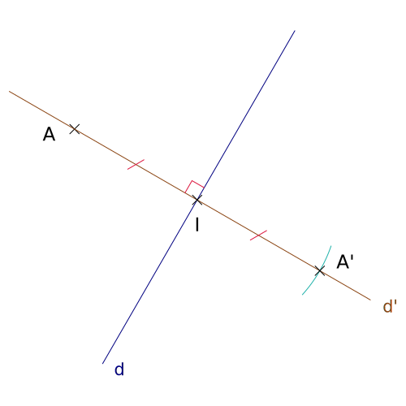
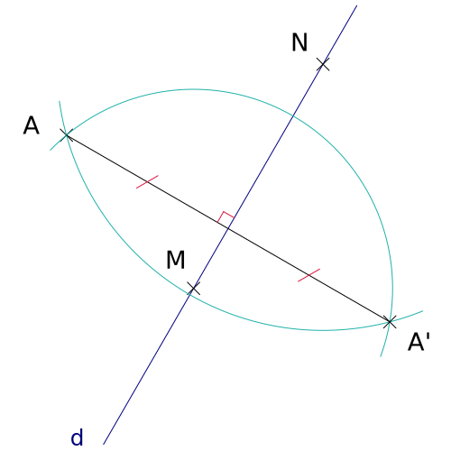

 Symétrie axiale (équerre) Construire le symétrique d'un point par rapport à une droite en utilisant l'équerre.
 Symétrie axiale (compas) Construire le symétrique d'un point par rapport à une droite en utilisant le compas.